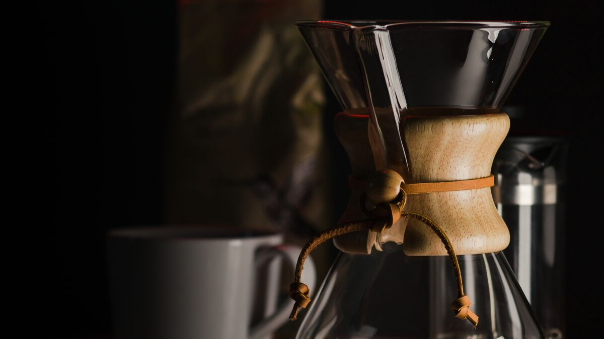

The filter recipe we give everyone who asks
Every Saturday someone at the counter asks how to make our coffee taste like it does when Dev makes it. This is what we tell them, written down so we can point at it.


You need a cone dripper, paper filters, a kettle and kitchen scales that read in single grams. The cone can be a Hario V60, a Kalita or a plastic Melitta from a charity shop. It matters much less than people think. The scales matter more than anything else on the list. Ours cost £12 from a cookware shop on Ecclesall Road.
If you buy ground coffee from us, ask for "filter" and we'll set the grinder for this recipe. If you grind at home, start with the setting below and adjust from there.
The recipe
This makes one big mug, about 220 ml in the cup. The ratio is 15 grams of coffee to 250 grams of water.
- Boil the kettle and let it stand for 30 seconds. That gets you to roughly 94°C.
- Weigh out 15 g of coffee and grind it medium-fine, a little coarser than table salt.
- Put the paper in the cone and pour hot water through it. Tip that water away. It warms the cone and gets rid of the papery taste.
- Put the coffee in, level it with a shake, set the scales to zero and start a timer.
- Pour 40 g of water, enough to wet all the grounds, and wait until the timer reads 0:40. The coffee will puff up as gas escapes.
- Pour slowly in small circles until the scales read 150 g, at around 1:15.
- Pour again to 250 g by 1:45, keeping the stream in the middle.
- Give the cone one gentle swirl so the bed settles flat. It should finish dripping between 2:45 and 3:15.

If it doesn't taste right
Change one thing at a time, and change the grind first. The time it takes to drain tells you most of what you need to know.
- If it tastes sour or thin and finished draining before 2:30, grind finer.
- If it tastes bitter or drying and took longer than 3:30, grind coarser.
- If the time was right but it tastes flat, use water straight off the boil. Light roasts like Los Naranjos often want it.
- If it tastes good but too strong or too weak, change the coffee by a gram and leave the water alone.
Spend money on scales before you spend it on a grinder, a kettle or a cone.
Water
Sheffield is lucky here. Our tap water comes from reservoirs in the Peak District and it's soft, so it makes good coffee straight from the tap. If you live somewhere with hard water, which is most of the south and east of England, coffee tastes chalky and flat whatever you do with the grind. A jug filter helps a lot.
To find out how much difference water makes, try one brew with a bottled still water that has a low mineral content. Look on the label for "dry residue" or "total dissolved solids" under about 100 mg per litre. If that cup tastes clearly better than your tap water cup, the water was the problem, not the coffee.
Two mugs, or a cafetière
For two mugs, use 30 g of coffee and 500 g of water, with the same steps and pours to 80 g, 300 g and 500 g. It will take nearer four minutes, which is fine.
For a cafetière, use 30 g of coarsely ground coffee to 500 g of water just off the boil. Leave it four minutes, stir the crust that forms on top, and spoon off the foam. Then wait another five minutes before you press the plunger gently down to just below the surface. It's slower, but the cup is much cleaner.
If you're still stuck, bring your brewer to the counter on a Saturday. Dev will make a cup with you and work out what's different.